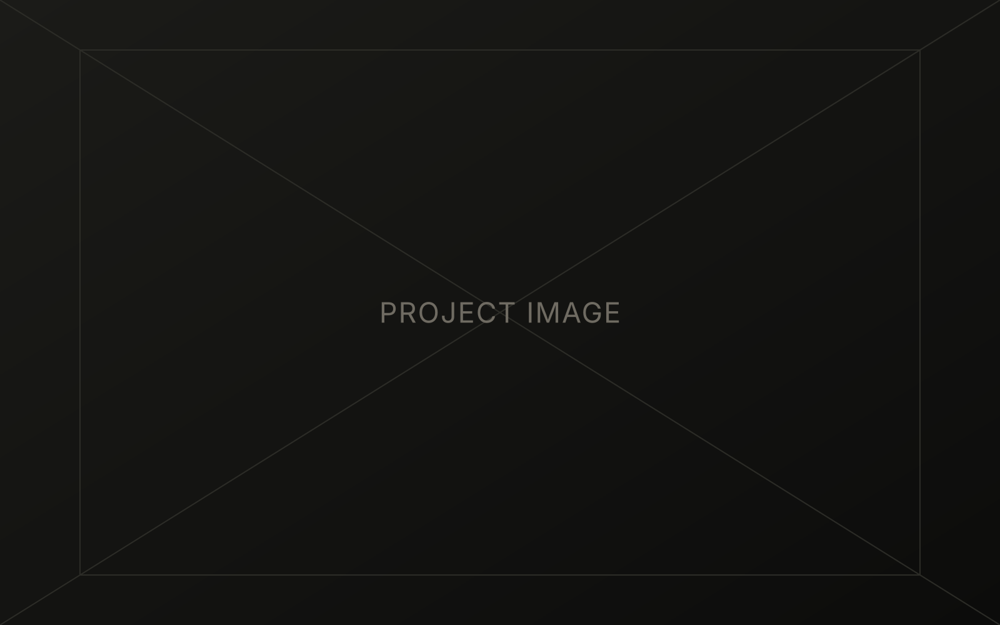

Evergreen
Evergreen is a new hotel and resort located in Copalis Beach, Washington. The concept centers on a luxurious yet nature-integrated experience, capitalizing on the area's coastal beauty rather than competing with it.
The branding plays a central role in that positioning. Instead of reading as another beachfront hotel, Evergreen's identity emphasizes sustainability and a lasting connection to the surrounding environment.

Several logotype versions were developed so the brand could communicate clearly across different media: a wordmark, a symbol, and a seal, each suited to different space constraints. The seal doubles as a decorative and supplementary mark.
The color palette leans on natural tints drawn from Evergreen's own location — clean, contrasting tones that read as an "out in the woods" experience. Typography was deliberately limited to two families to keep every touchpoint cohesive.
For the companion mobile app, secondary research included a deep look at existing smart-home practices — surveys and focus-group interviews aimed at surfacing the real pain points guests hit during a stay.
That research showed guests were enthusiastic about controlling multiple room devices and requesting services from one place, but wary of complexity — they wanted fast, obvious access to controls. Following the resulting user journey map, the key actions were brought forward onto the home screen, with tabs held in reserve for secondary features.
The interface stays simple to navigate, with contrast between UI elements built to WCAG standards for an inclusive experience with less eye fatigue. Gestalt principles guided the UX work throughout — grouping by region, layout grids for continuity, and consistent color for similarity — resulting in a clear, cohesive visual hierarchy.